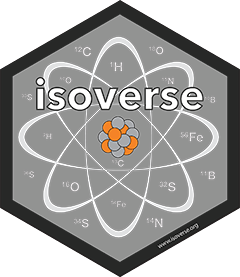

A GUI toolkit for exploring stable isotope data files read with isoreader2. It ships ready-to-run explorer apps, a Show code feature that writes the isoreader2 code to reproduce whatever you’re looking at, and a set of composable Shiny modules you can recombine into your own app.
Installation
# install the release version from CRAN
install.packages("isoexplorer")
# or the development version from GitHub
# install.packages("pak")
pak::pak("isoverse/isoexplorer")
# isoreader2 relies on an external helper executable; check/install it once:
isoreader2::ir_check_isoextract()Quick start
There are two ways to launch an explorer.
Explore an object you already read
The focused explorers take an in-memory ir_isofiles object and show one measurement type at a time — a file-selector sidebar on the left and the plot on the right:
library(isoexplorer)
iso <- isoreader2::ir_find_continuous_flow("path/to/files") |>
isoreader2::ir_read_isofiles()
ie_explore_continuous_flow(iso)
ie_explore_dual_inlet(iso)
ie_explore_scans(iso)
ie_explore_metadata(iso) # just the selector tableThe object may be mixed-type (each explorer filters to its own type).
By default these run detached: the app is launched in a separate R process (via callr, with the object handed over in a temporary .rds) and opened in your browser, so your R session stays free. Closing the browser tab stops the app and its process; the process is also killed if your R session exits, so nothing is left running. Pass detached = FALSE to instead run the app in the current session (blocking) with shiny::runApp(); add launch = FALSE to get the [shiny::shinyApp()] object back unrun (for deployment or manual launching). Called while a document is being rendered (knitr / Quarto), they don’t launch — they print a note to run interactively.
These functions also accept:
-
variable_name— the name used for the object in the generated Show code output. It defaults to the deparsed expression you passed, somy_iso |> ie_explore_scans()writes code starting frommy_iso; override it withie_explore_scans(iso, variable_name = "special_name"). -
initial_selection— a filter expression evaluated against the aggregated metadata:FALSE(the default — nothing selected),TRUE(everything), or any [dplyr::filter()] condition such asie_explore_continuous_flow(iso, initial_selection = grepl("std", file_name)). In detached mode it must be self-contained (re-evaluated in the separate process).
Start a server that loads data at runtime
ie_create_isofiles_server() builds the full multi-tab app (one tab per measurement type) with no isofiles argument, and returns it as a [shiny::shinyApp()] object to run (shiny::runApp()) or deploy. Data arrives at runtime via:
- the navbar Load examples button (on by default — copies the isoreader2 bundled examples with
ir_copy_examples()and reads them), - the navbar Upload button (
upload_folder = "some/dir"): files of any isoreader2 type, their.jsonserializations, and.ziparchives are stored, read, and added automatically, and - watched folders (
monitoring_folders = "some/dir"): isofiles appearing there are picked up automatically.
ie_create_isofiles_server() |> shiny::runApp() # Load examples / upload
ie_create_isofiles_server(upload_folder = "uploads", monitoring_folders = "incoming") |>
shiny::runApp()Only newly seen files are ever read, so adding files is cheap. A “get started” prompt is shown until something is loaded.
Shiny caps uploads at 5 MB per file by default; since raw isofiles are often larger, raise it with max_upload_size (in MB):
ie_create_isofiles_server(upload_folder = "uploads", max_upload_size = 200) |>
shiny::runApp()Behind a reverse proxy (e.g. nginx in front of ShinyProxy) you may also need to raise that proxy’s own request-body limit (nginx: client_max_body_size).
Show the code
Every app has a Show code button (top-right of the navbar) that assembles, from the modules currently in view, the isoreader2 code that reproduces the plot — read → aggregate → plot — and opens it in a read-only editor.
- It is faithful to the current state: the intensity units, the selected files/analyses (
ir_filter_metadata(...)), the chosen species/masses/ratios, scan type, zoom window, and every plot option below are reflected in the code. - A headings tree on the right jumps around the document; the depth of each section sets its heading level (
#,##,###). - Toggle between plain R (default) and a Quarto view (
” ```{r} ”chunks), Copy the displayed code to the clipboard, or Download .qmd (the download adds the YAML front matter; the viewer omits it). - It always opens with a setup chunk (
library(isoreader2),library(ggplot2)). - In the multi-tab server, only the active tab’s code is shown.
For example, exploring continuous flow data with a couple of files selected and a non-default color might generate:
# Setup
library(isoreader2)
library(ggplot2)
# Read data files
# assumes all data files are in the 'data' folder in the working directory
iso_files <- ir_find_continuous_flow("data") |>
ir_read_isofiles()
## Aggregate data files
cf_data <- iso_files |>
ir_aggregate_isofiles(intensity_units = "mV") |>
ir_calculate_ratios()
### Plot continuous flow
cf_data |>
ir_filter_metadata(file_name == "my_run_1") |>
ir_plot_traces(
ratio = c("45/44", "46/44"),
facet = file_name,
color = factor(analysis)
) +
theme(
text = element_text(size = 14),
legend.position = "bottom"
)Plot options
Each plot has, around the plot area, an intensity units popover, a ratios popover, per-species popovers (to show/hide individual masses and, once ratios are calculated, the available isotope ratios — e.g. 45/44 — both checked by default), x-axis zoom controls (brush to zoom, then pan/back/show-all), and a PDF download.
The ratios popover controls ir_calculate_ratios(): a Calculate ratios toggle and, when it is on, the additive offsets add to numerator / add to denominator (in the current intensity-unit family’s reference unit, shown in brackets — [V] for V/mV, [nA] for the current units, [cps] for cps; pre-filled with the function defaults and emitted as num_add.* / denom_add.* in the generated code) plus a Normalize toggle (normalizes each ratio group by its median). Edits are staged: nothing takes effect until you click Apply (green); Cancel (gray) discards them and the popover reopens at the active settings.
The Plot Options sidebar adds:
-
Facet / Color / Linetype by —
(none)or any ofspecies/mass/trace/data_type(intensities vs. ratios) or a metadata column. Numeric and date/time columns are wrapped infactor()when used as a discrete aesthetic. Faceting defaults tofile_name; intensities and ratios are split into separate panels automatically (the plot functions facet ondata_typewhenever both are present, regardless of this choice). Color by additionally offers(default)— the initial choice — which leaves the colour aesthetic to isoreader2, so an intensity trace and its ratios share one colour and one legend entry (CO2: 45, 45/44); pickingtraceinstead gives every trace its own colour and legend entry. -
Scales — facet scales (
free/fixed/free_x/free_y). - Scientific notation, Drop unused levels, and (continuous flow only) Short time labels.
- Legend position and Font size.
The generated code reflects all of this: the aggregate step gains an ir_calculate_ratios() call (with only the non-default offsets / normalize_ratios = mean) when Calculate ratios is on, and the mass/ratio selections drive the plot functions’ mass = ... / ratio = ... arguments.
The app never filters the plotted data itself — it only names what you checked and lets isoreader2 do the sub-selecting, which is what keeps the plot and the generated code in step (and leaves the trace/colour levels to isoreader2). Since those arguments default to everything(), they are emitted only when you narrow the selection: un-checking every mass of a species emits species = ..., un-checking individual masses emits mass = c(...), and un-checking all of them emits mass = c() — which is how “show me only the ratios” is expressed.
Build your own
The apps above are thin compositions of a few modules, all wired through a single central ie_file_server (selector and plot modules never talk to each other directly — everything goes through the file server):
-
ie_file_server(id, get_isofiles, initial_selection, upload_folder, monitoring_folders, examples_folder)— the hub. Maintains a running set of read isofiles (seeded fromget_isofiles(), grown by uploads / watched folders — only new files are read), splits it by measurement type, owns the shared intensity units and the per-type selection, and serves metadata + selection-filtered aggregated data. Withupload_folder/examples_folderset it drives the navbar Upload / Load examples buttons (placed withie_file_ui(id)). -
selector —
ie_metadata_ui(id)+ie_scans_metadata_server(id, file)(andcf_/di_variants). Pushes the chosen files/analyses into the file server. -
plot —
ie_scans_plot_ui(id)+ie_scans_plot_server(id, file)(andcf_/di_variants). Pulls the selection-filtered data back out. -
code server —
ie_code_ui(id)(the Show code button) +ie_code_server(id)(see below).
library(shiny)
library(isoexplorer)
ui <- bslib::page_fillable(
# convenience: selector sidebar + plot for one type
ie_type_explorer_ui("meta", ie_scans_plot_ui("scan"))
)
server <- function(input, output, session) {
file <- ie_file_server("files", get_isofiles = reactive(iso))
ie_scans_metadata_server("meta", file) # selection -> file server
ie_scans_plot_server("scan", file) # file server -> plot
}
shinyApp(ui, server)Want full control of the layout? Skip ie_type_explorer_ui() and place ie_metadata_ui("meta") and ie_scans_plot_ui("scan") wherever you like. To reuse the package’s navbar shell (theme picker, dark mode, about popup, Show code button), launch with ie_run_app() instead of shinyApp().
A custom module just needs to talk to the file handle — e.g. read file$get_aggregated_scans_data() for the selected data, or call file$set_units("nA") to change the aggregation units app-wide.
The ie_file_server handle
ie_file_server() returns a list of accessors that every module talks through. For each <type> in scans / cf / di:
| accessor | purpose |
|---|---|
get_units(), set_units(units)
|
the shared intensity units (default "mV") |
get_<type>_metadata() |
reactive metadata tibble for a selector table |
set_selected_<type>(rows) |
push the selected metadata rows (selectors call this) |
get_<type>_selection() |
the resolved current selection |
get_aggregated_<type>_data() |
reactive selection-filtered aggregated data (plots read this) |
get_<type>_select_signal() |
file paths an upload wants selected (a selector reflects this) |
get_active_type() |
the type whose tab to activate after an upload auto-select |
The typed wrappers (ie_scans_metadata_server() etc.) bind all of these for you; you only need them directly when wiring a custom module against the file server.
The code server (ie_code_server)
ie_run_app() instantiates ie_code_server("code") for you and passes it to setup_modules as its second argument; ie_code_ui("code") is the navbar button. Each step of the document is a get_code generator that the wiring registers into a dependency tree. The bundled apps register, per measurement type, a read -> aggregate -> plot chain:
setup_modules = function(file, code) {
ie_scans_metadata_server("scans_meta", file) # the selection table
code$register("read", "Read data files", get_code = function(input_var = NULL) {
list(
code = 'iso_files <- ir_find_scans("data") |> ir_read_isofiles()',
output = "iso_files"
)
})
code$register("agg", "Aggregate data files", depends_on = "read",
get_code = function(input_var = NULL) {
list(code = sprintf("scans <- %s |> ir_aggregate_isofiles()", input_var),
output = "scans")
})
plot <- ie_scans_plot_server("scans", file)
code$register("plot", "Plot scans", plot$get_code, depends_on = "agg")
}register(code_id, heading, get_code, depends_on = NULL, group = NULL) places the snippet in the dependency tree. The document is rendered depth-first, with the tree depth setting the heading level; an optional group restricts a registration to one navbar tab. A get_code is function(input_var = NULL) returning list(code = <string>, output = <string or NULL>): it is called with the output variable of the module it depends on, and its own output becomes the input variable of its dependents (a terminal node such as a plot returns output = NULL).
isoverse 
This package is part of the isoverse suite of data tools for stable isotopes. If you like the functionality that isoverse packages provide, please help us spread the word and include an isoverse or individual package logo on one of your posters or slides. All logos are posted in high resolution in this repository. If you have suggestions for new features or other constructive feedback, please let us know on this short feeback form.
Funding 
This project is supported by a grant from the US National Science Foundation (EAR-2411458) to Sebastian Kopf.